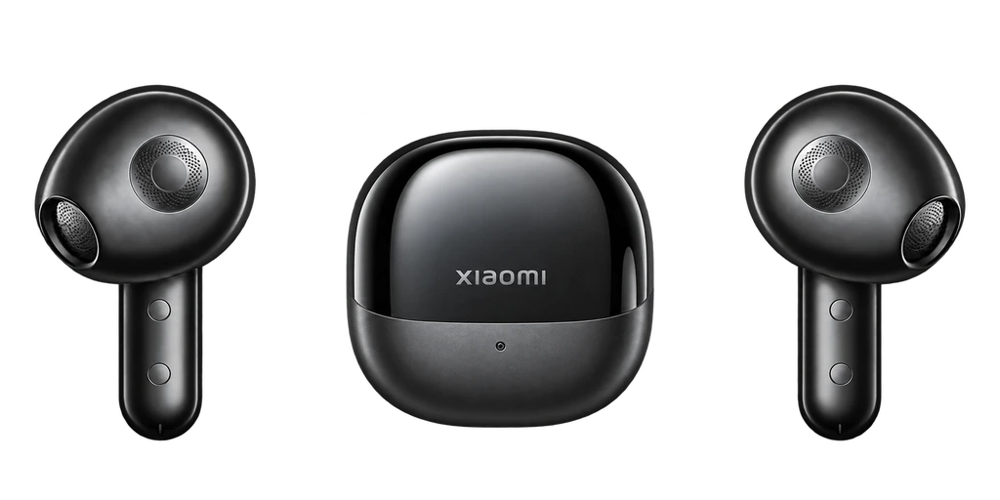
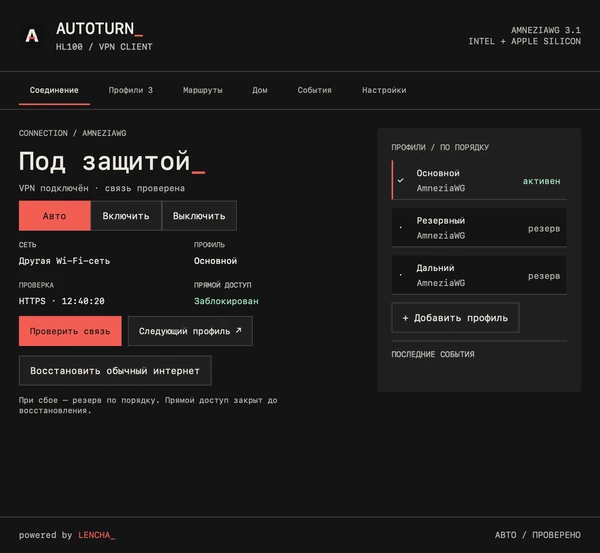
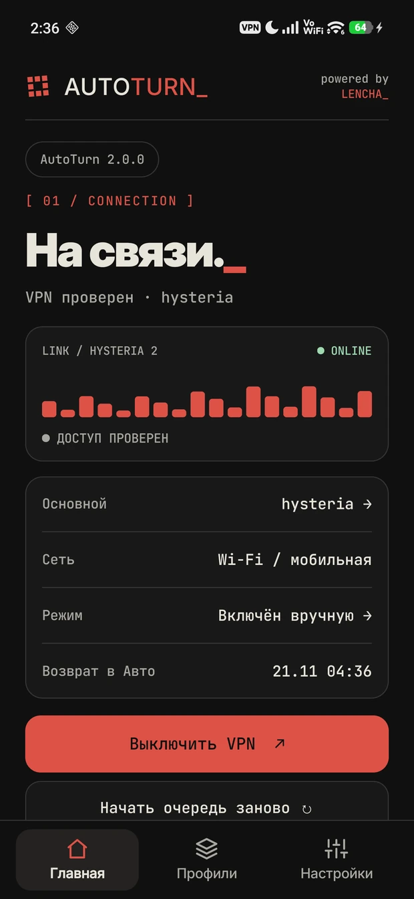
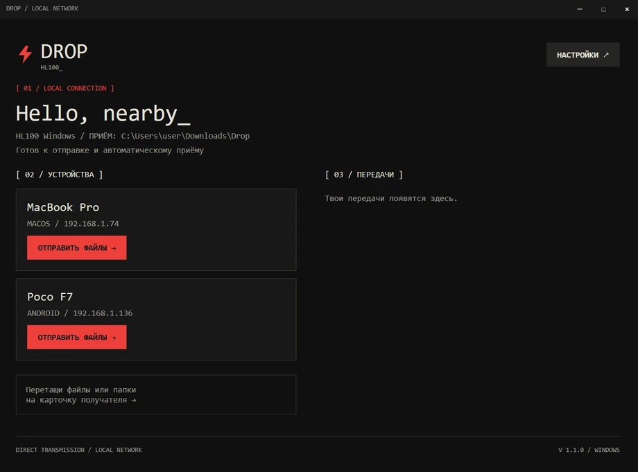

Android · macOS
AutoTurn VPN
Дома трафик идёт напрямую. При выходе из домашней сети приложение само включает ваш VPN.
Передать папку с телефона на Mac, увидеть заряд наушников, включить VPN за порогом дома.
Открыть каталог



Android · macOS
Дома трафик идёт напрямую. При выходе из домашней сети приложение само включает ваш VPN.
Android · тестовая версия
При открытии кейса появляется карточка с зарядом левого наушника, кейса и правого наушника.
Windows · Android · macOS
Передаёт файлы и папки между устройствами в одной сети. Прерванную передачу можно продолжить.
Android + Windows
Управляет питанием, таймером и звуком ПК с телефона. Для подключения нужны приложение и агент на компьютере.
Windows
VPN для Windows с тремя режимами. Через профиль можно направить весь трафик или только выбранные сервисы.
Android · Windows
Списки дел, покупок, ссылок и мыслей с напоминаниями. Для синхронизации можно подключить свой сервер.
Windows
Сохраняет видео по ссылке, из встроенного браузера или записью окна. Загрузки собираются в одной очереди.
Ubuntu · свой сервер
Веб-панель для Telegram WEB Proxy на своём VPS. В браузере доступны ключи, QR-коды и статистика трафика.